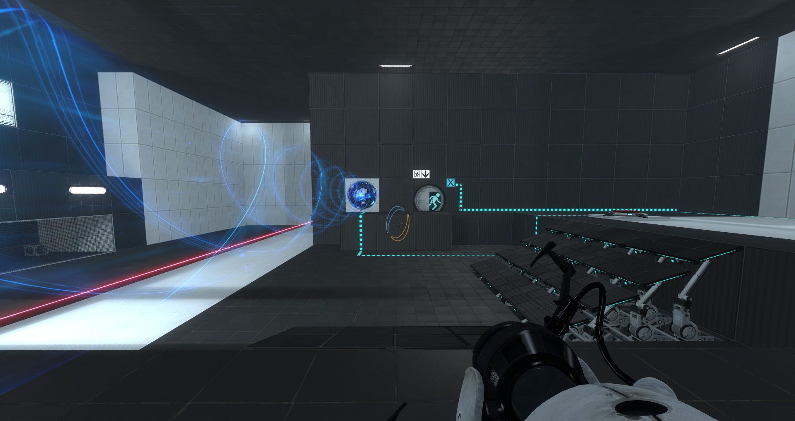
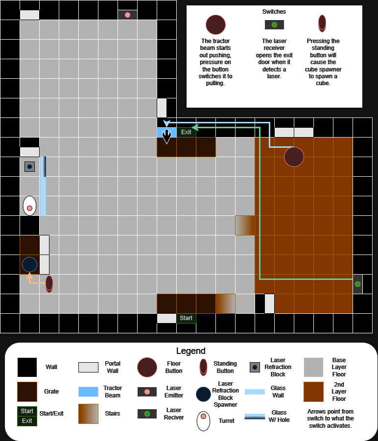
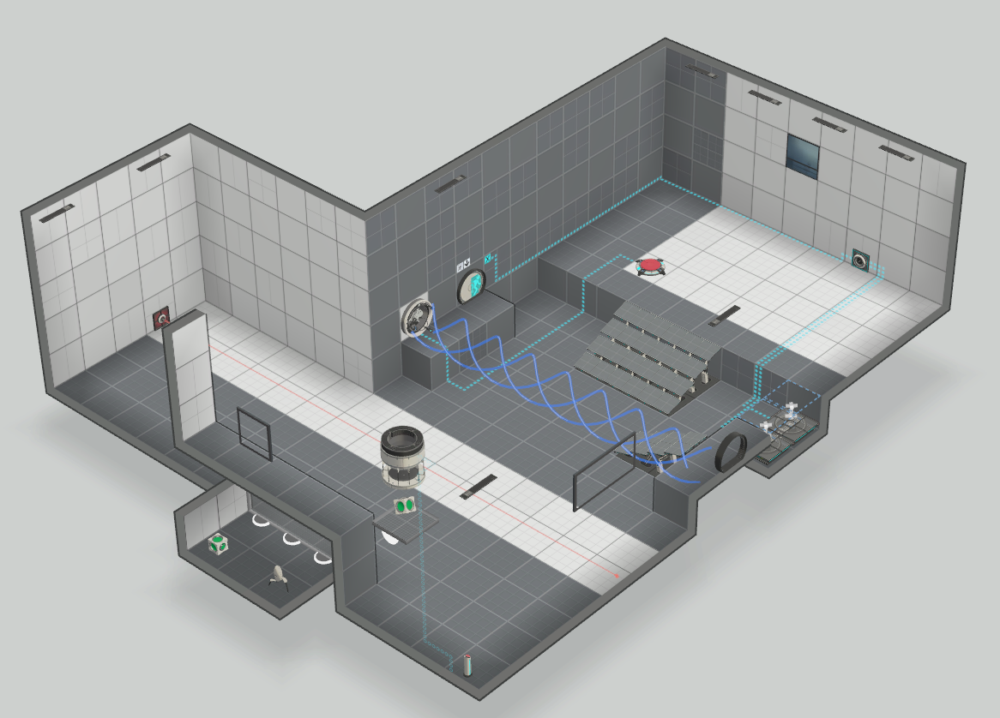
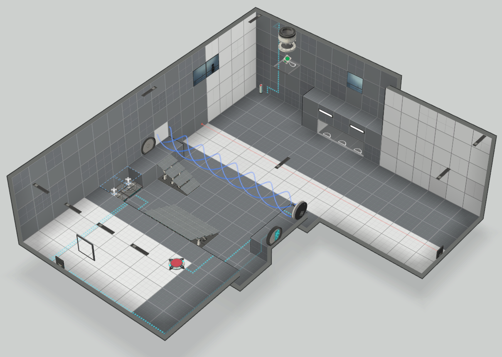
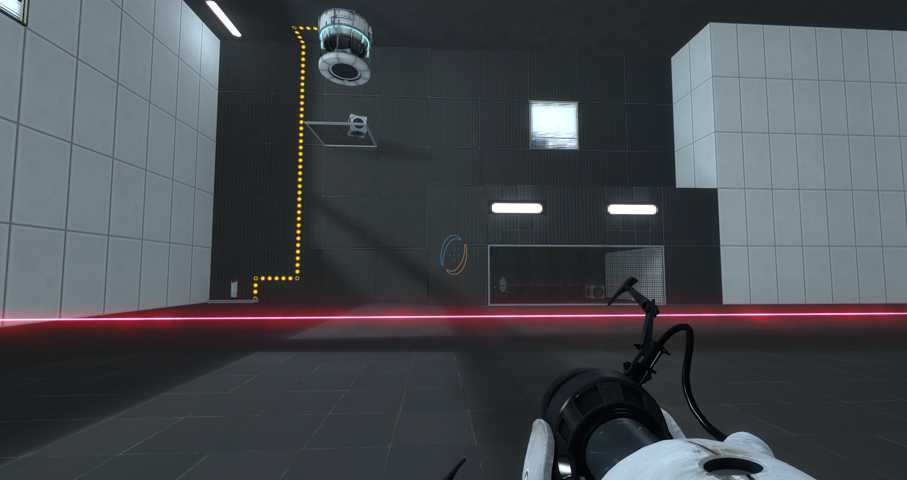
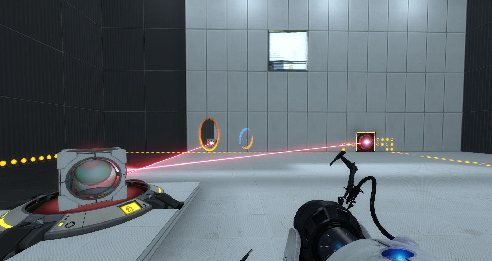
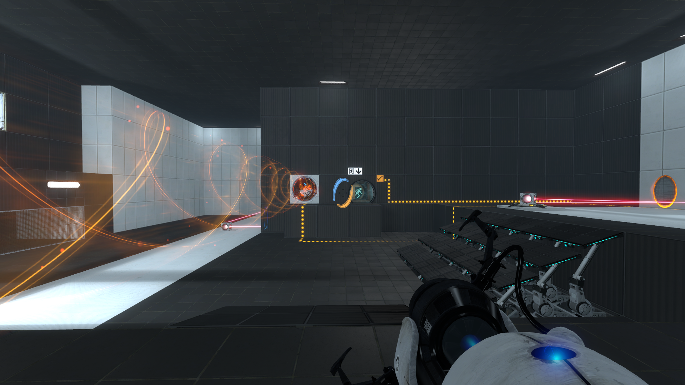

A custom level for Portal 2 created in the game's level editor.
This project was assigned for a level design course.
The project was divided into four phases: planning, building, refining and reflecting.
The planning phase consisted of playing the game and drafting a level plan and written explanation.
The building phase was spent making the level in the Portal 2 level editor and posting on the Steam Workshop.
The refining phase consisted of an in-class playtest and adjusting the level based on feedback.
The reflection phase required a write-up of playtest feedback and a personal assessment of the level's quality.
Portal 2 is a 3D first-person puzzle game where the player uses portals and other elements to open doors
to proceed through a series of test chambers. They elements include buttons, hostile turrets, tractor beams,
lasers, and metal boxes.
It is generally assumed that players seeking out custom levels have played through the main game and are
familiar with its mechanics.
The level I created began with an experiment whether boxes that redirect lasers can still operate while holding
down buttons. This interaction worked, so I based the puzzle around it. The door leading the goal is locked unless
the player directs a laser to a sensor to open it, but the box that redirects that laser needs to weigh down a plate
that activates a tractor beam to pull the player to the door.
The initial build had a few unintended extra solutions, but they were quickly patched by changing wall panels to they
could no longer support portals.

The planning diagram for the level.

Starting side view from in the level editor.

Ending side view from in the level editor.

Both reflector cubes in the level.

A laser being redirected into a sensor.

The puzzle chamber in its solved state.
NOTE: Requires owning Portal 2 on Steam. Log in and click the subscribe button.
Then, open Portal 2, navigate to Custom Level, Play Custom Levels, and select this level.